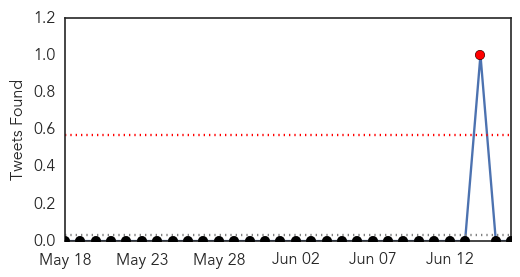
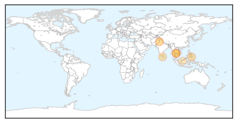

30 Day Trends
Web: 7 alerts, 2 warnings
Twitter: 1 alerts, 0 warnings
Top Articles:
- 0.995
- Dengue: Khader to take stock of situation today
- 0.984
- Public urged to destroy mosquito breeding grounds to prevent dengue fever
- 0.975
- Headlines, News, The Philippine Star
- 0.945
- Khadar asks hospital staff to work on Sundays too
- 0.894
- Reckitt Benckiser partners Health Ministry in dengue awareness drive
- 0.893
- Region-wide campaign launched to fight dengue
- 0.795
- Seminars, walks mark Anti-Dengue Day
- 0.673
- Middle class residents targeted in dengue fever campaign
- 0.508
- Seminars, walks held to mark International Dengue Day
Top Tweets:
- 0.726
- Flavivirus news: Fewer dengue cases, but number may rise - AsiaOne: AsiaOneFewer dengue cases, ... http://t.co/lXc704Rh3G pathogenposse
- 0.551
- Flavivirus news: Dengue mosquitoes hitch rides on Amazon river boats - Medical Xpress: Medical ... http://t.co/w9iolhymep pathogenposse
Web/News Articles

Tweets
Article Locations
Article Confidences